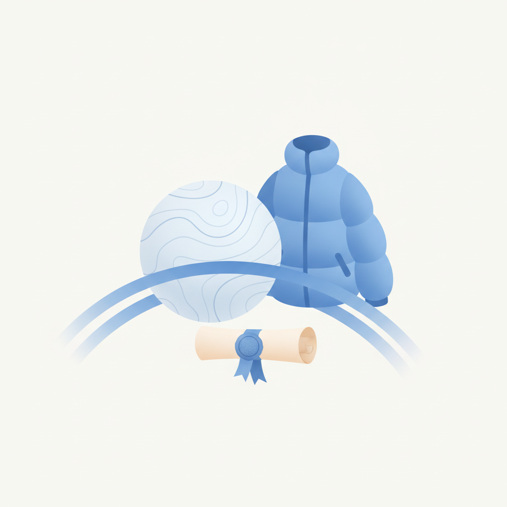
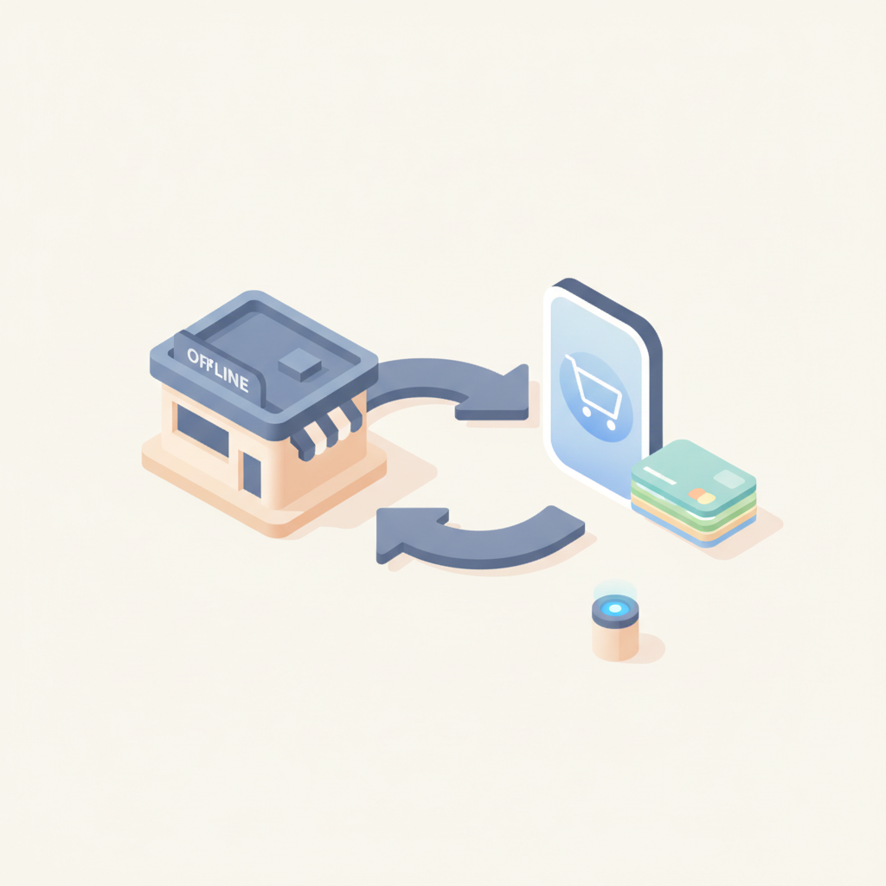
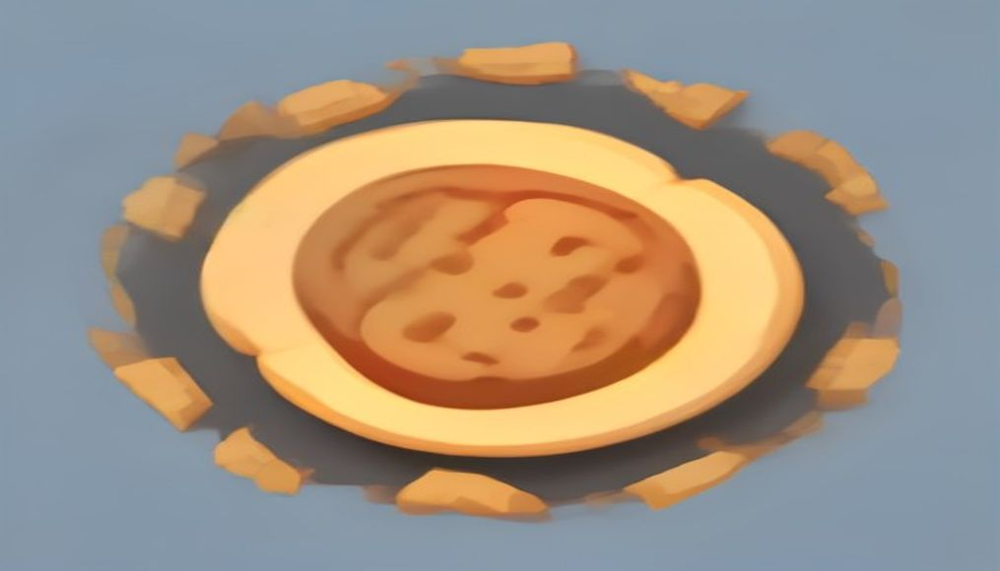
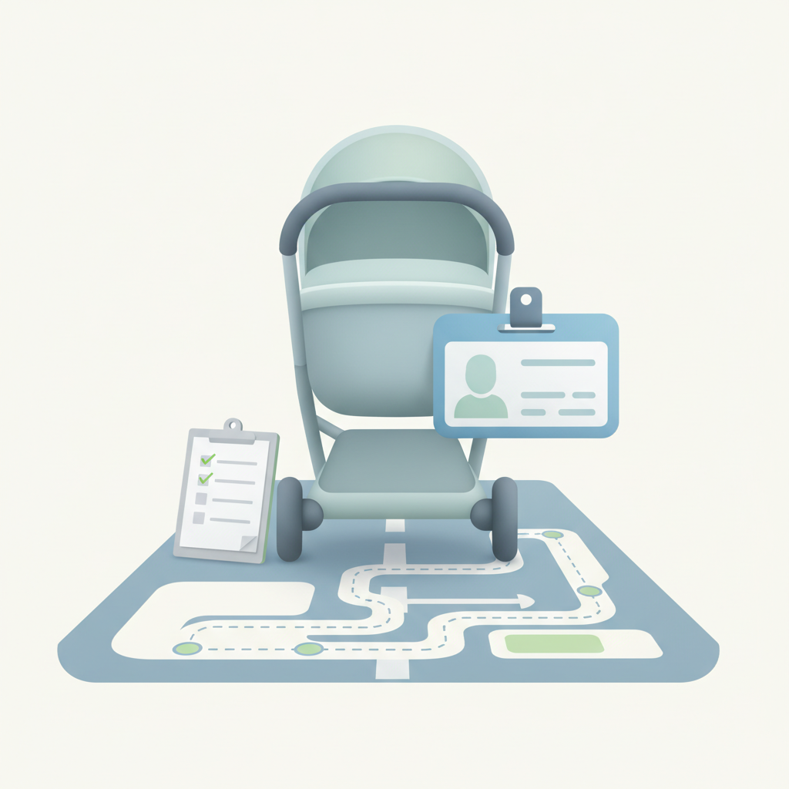
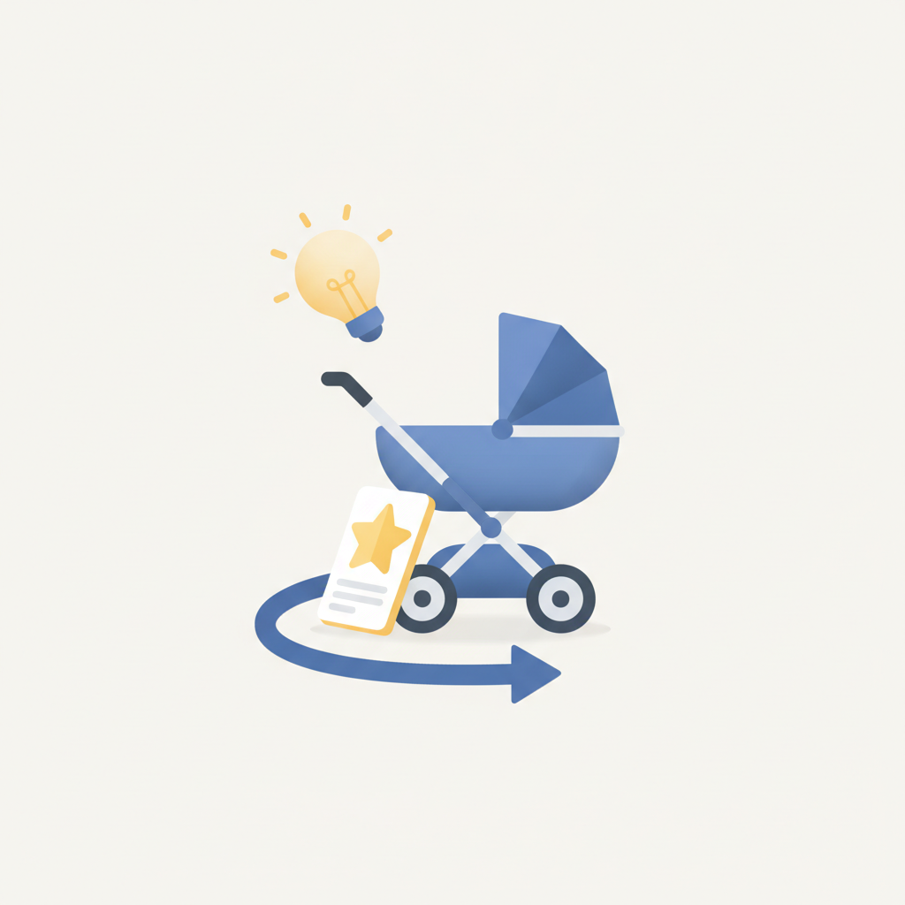
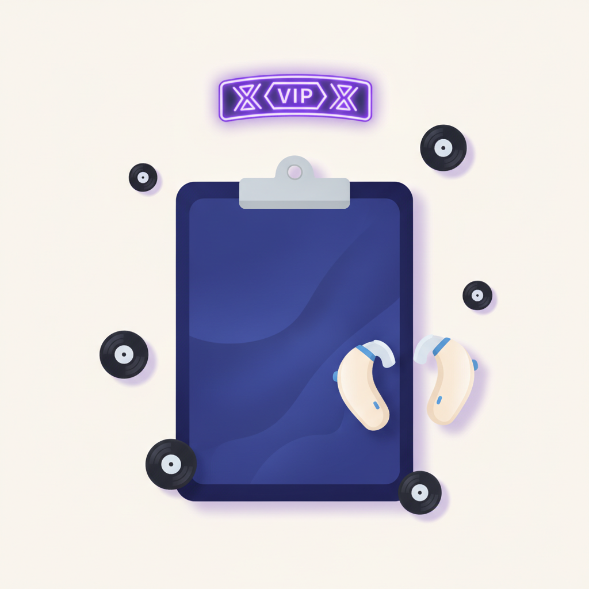
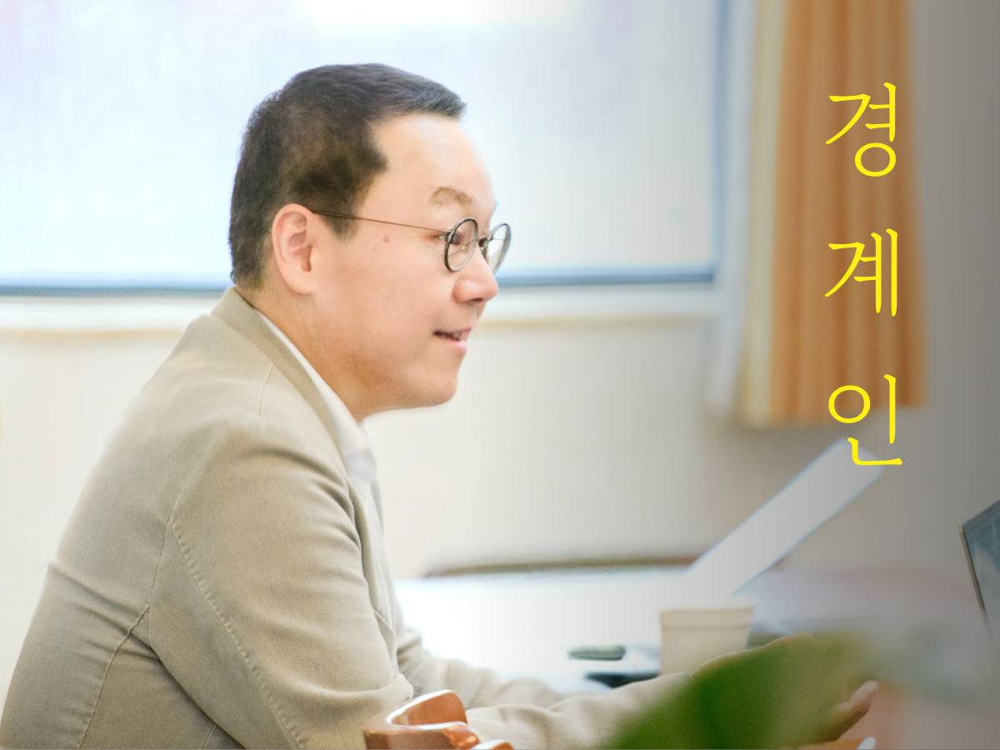

안녕하세요! 월요일 마케팅 소식 전해드립니다 😊 오늘은 컬럼비아 스포츠웨어의 캠페인 이야기가 단연 시선을 붙잡습니다. "지구가 평평하다는 것을 증명하면 회사를 넘겨주겠다"는 파격적인 선언으로 시작된 이 캠페인은, 결국 '지평설'을 증명한 사람은 없었지만 올해 최고의 광고 중 하나로 꼽히며 마무리됐습니다. 브랜드가 직접 논쟁의 한복판에 뛰어들어 화제를 설계한 방식은, 제품 기능이나 감성 소구 없이도 얼마나 강력한 브랜드 각인이 가능한지를 보여주는 사례입니다.
롱블랙에서는 AI 시대를 살아남는 사람의 조건을 인류학 박사의 시각으로 풀어냈습니다. 새로운 AI 도구가 쏟아질수록 "나는 어떤 역량을 키워야 하는가"라는 질문이 더 선명해지는데요, 기술보다 사람에게 있는 것에 집중한 5가지 역량 이야기는 월요일 아침 마케터로서 스스로를 점검해보기에 좋은 콘텐츠입니다. 도구를 다루는 속도보다 어떤 판단을 내리느냐가 중요해지는 지금, 오늘 꼭 챙겨보시길 권합니다.
이번 주도 좋은 인사이트 가득한 한 주 되시길 바랍니다! 🚀

1지구가 평평하다는 것을 증명하면, 회사를 넘겨주겠다고 공언한 컬럼비아 스포츠웨어(Columbia Sportswear)의 파격적인 캠페인이 막을 내렸다. 결국, 그 누구도 '지구 평면설(Flat Earth Theory, 이하 지평설)'을 증명하지는 못했지만 컬럼비아 스포츠웨어의 캠페인은 올해 '최고의 광고'라는 평가를 받으며 아웃도어 캠페인의 새로운 지평을 열었다.10일 업계에 따르면 컬럼비아 스포츠웨어는 약 8개월간 진행해 온 '익스페디션 임파서블(Expedition Impossible)'
›
22026년 2분기에 본 네이버는 기존 'IT역량을 기반으로 오프라인 시장을 자사 온라인 플랫폼에 끌어올리는 전략'을 다각도로 확대하는 한편, 또 다른 한 축을 더하고 있습니다. 한편에서는 N페이 커넥트를 통해 기존 전략을 오프라인까지 확장하려 하고, 또 업계 2위인 쇼핑 부문에서는 1위와의 격차를 좁히기 위해 달리고 있습니다. 다른 한편에서는 지금까지 쌓아온 인프라 운영 역량을 AI팩토리 사업으로 풀어낸다는 목표입니다.
› 3“어떤 게임으로 선보여야 할지 많은 고민을 했다. 단순히 화려한 그래픽이나 게임 콘텐츠 규모만으로는 부족하다고 생각했기 때문이다. 그리고 저희가 찾은 답은 바로 ‘모두를 위한 다중접속역할수행게임(MMORPG)’이다.” 남재관 컴투스 대표는 7일 서울 종로구 JW 메리어트 동대문 스퀘어에서 열린 ‘제우스: 오만의 신’(이하 제우스) 쇼케이스에서 이같이 말했다. 제우스는 컴투스가 퍼블리싱을 맡고 에이버튼이 개발 중인 신작으로, 오는 26일 출시 예정이다. 이날 행사는 핵심 콘텐츠, 개발 철학, 서비스 방향 등 제우스에 대한 자세한 내용
›
4요즘은 방치형 RPG 장르의 전성시대라고 해도 과언이 아닙니다. 주요 게임사들이 인지도 높은 지식재산권(IP)을 활용해 너나 할 것 없이 방치형 신작을 쏟아내고 있죠. 데브시스터즈의 ‘쿠키런: 크럼블’도 그중 하나입니다. 하지만 이 게임은 조금 다릅니다. 일반적으로 방치형 게임은 가만히 지켜보는 시간이 길어 자칫 잘못하면 단조롭게 느껴질 수 있는데요. 보는 맛과 이용자의 개입을 잘 버무렸습니다.
›
5제가 가장 좋아하는 광고들은 늘 영리함(smart)과 엉뚱함(silly) 사이의 균형을 절묘하게 맞춥니다. 영리한 인사이트 위에 엉뚱한 아이디어가 올라가 있는 광고들이죠.하지만 여기서 말하는 '엉뚱함'은 꼭 웃긴다는 의미는 아닙니다. 평소라면 하지 않을 행동, 당연하게 여겨지는 방식을 뒤집는 행동에서도 엉뚱함은 나올 수 있습니다.좋은 예가 바로 버거킹의 곰팡이 핀 와퍼(Moldy Whopper)입니다. 제 파트너인 닉(Nick)도 이전에 이 작품에 대해 글을 쓴 적이 있습니다. 크게 웃음을 주는 광고는 아니지만, 맛있어 보여야 하는
›
6My favourite work always strikes the right balance of smart and silly. A silly idea that's grounded in a smart insight. But I don't just mean silliness in a humorous sense. Silliness can come from acting in a way that's not considered normal or expected. One great example is Burger King's Moldy Whop
›
7[ 매드타임스 최승은 기자] 한때 영국의 레이브 문화를 이끌었던 세대는 지금도 음악과 나이트라이프를 즐긴다. 스펙세이버스(Specsavers)는 이들에게 "나이가 들었으니 청력을 관리하라"고 말하는 대신, 청력검사를 받으면 클럽 게스트리스트에 이름을 올릴 수 있는 캠페인을 선보였다.스펙세이버스가 50대 이상을 위한 클럽 게스트리스트 '더 테스트리스트(The Testlist)'를 론칭했다. 약 3분간의 무료 온라인 청력검사를 완료하면 라이브 음악 이벤트 티켓에 응모할 수 있다. '테스트(Test)'와 클럽의 '게스트리스트(Guestl
›
AI를 둘러싼 새로운 소식을 접할 때마다 저는 불안해요. 지금이라도 다른 AI 도구를 결제해야 하나, 아니면 대체되지 않을 뭔가를 찾아 나서야 하나. 이 조급함은 결국 하나의 질문으로 이어지죠.
아티클 읽기 →브랜드 진단부터 지금 당장 해야 할 우선순위까지,
30분 무료 상담에서 함께 정리해드려요.
이미 수십 개 브랜드가 상담받았습니다.
내 브랜드처럼, 함께 고민하는 팀원의 마음으로 봅니다.
스타트업 대표·마케팅 담당자를 위한 30분